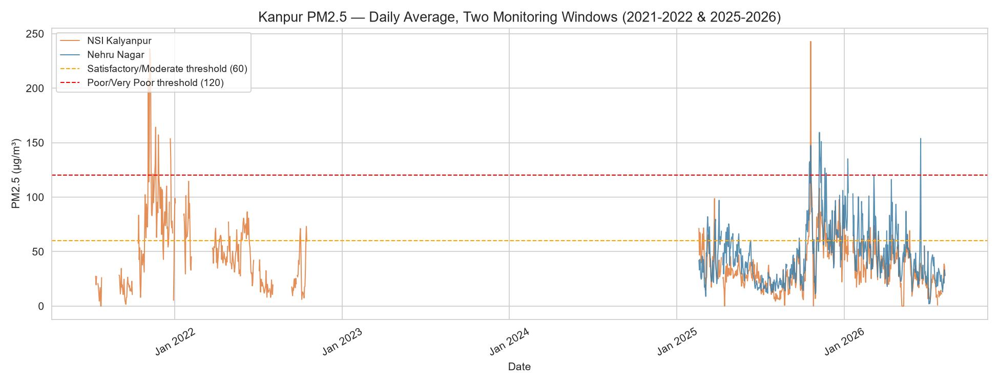

Analysis 01 : Ground Station Particulates
Particulate Dynamics and Seasonal Multipliers in Kanpur
Winter PM2.5 concentrations reached approximately five times the monsoon baseline across NSI Kalyanpur and Nehru Nagar, with a documented 2.3-year reporting hiatus before a second window from February 2025 to August 2026.
Image: Avnish Singh, using UPPCB / CPCB records via OpenAQ, October 2026. Credits entry.